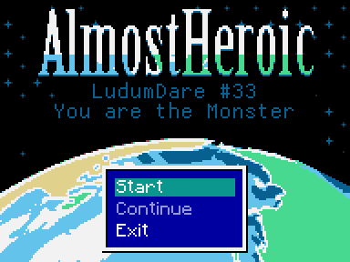
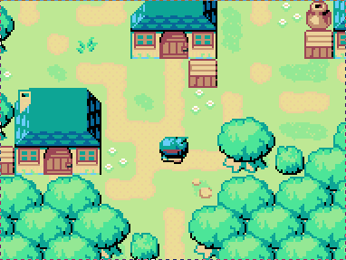
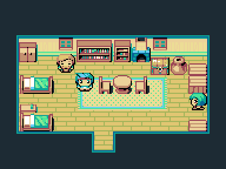
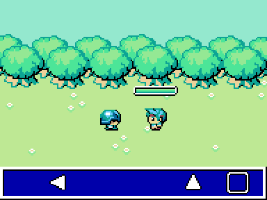
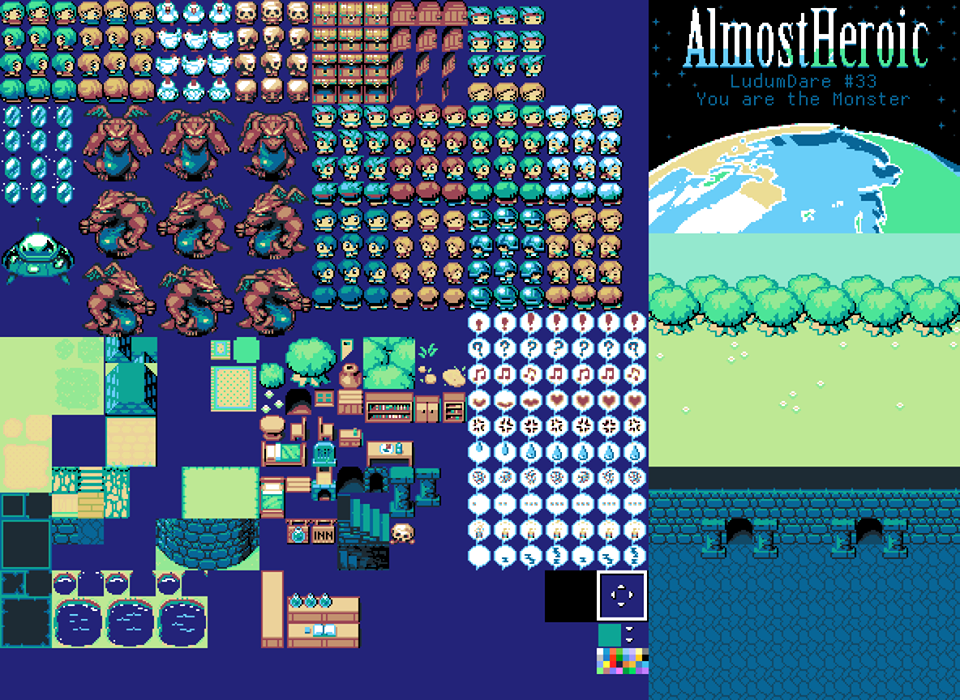

Cet article portera sur la construction d’un jeu en 72 heures lors de la très célèbre JAM Ludum Dare. Une expérience très enrichissante qui nous aura permis de finir un jeu original en seulement 72 heures. Cet article propose une brève description de ce qu’est un Ludum Dare, de ce que nous avons fait durant ces 72 heures, et du jeu réalisé. Cet article spoilera certains concepts du jeu. Afin de ne pas vous gâcher la surprise de notre production, il est conseillé de terminer le jeu (d’une durée approximative de 30 minutes) avant de lire cet article. Vous pouvez le télécharger sur sa fiche officielle. Bonne lecture !
Ludum Dare
Ludum Dare est une compétition créée en 2002 par Geoff Howland, opposant des milliers de créateurs de jeux vidéos (2725 jeux pour cette édition). Ceux-ci doivent réaliser un jeu suivant un thème donné et dans un temps limité. Depuis 2010, la compétition se divise en deux axes :
- Compo: les participants ont 48h pour produire un jeu (et tous les assets);
- Jam: autorisation de participer à plusieurs, la compétition dure 72 heures et les règles sont plus flexibles.
Le fait de ne rien gagner permet plus de flexibilité au niveau des temps de remise; permettant ainsi aux développeurs de faire du bug-fix, même si la limite de temps est dépassée.
Les jeux notés par les créateurs
Une fois les jeux soumis, ils entrent en phase de review et ce durant trois semaines. Ce sont les compétiteurs qui les évaluent ! Au plus un créateur fait de reviews, au plus il accroît la visibilité de son propre projet.
Comme il n’y a rien à gagner (outre la fierté d’avoir réalisé un jeu dans une durée limitée), les notes sont souvent très fair-play et les créateurs bénéficient d’un feed-back souvent de qualité !
Success Stories
Il est courant d’y voir de grands noms de la scènes indépendantes, comme par exemple Notch, le créateur de Minecraft; Nicolas Canasse, le créateur du langage Haxe et créateur du jeu Evoland qui vient de sortir en version 2, et qui était à la base une participation au Ludum Dare 24 (il est à noter que j’ai une affection particulière pour ses créations car en plus de faire de très bons jeux, il est à l’origine de la bibliothèque OCaml ExtLib, qui a servi de base à OCaml Batteries; une bibliothèque à laquelle j’ai modestement contribué). On y trouve aussi d’autres créateurs, comme Deepnight, et bien d’autres que je ne connais pas :/ .
Pour mes amis de RPGMaker, les excellents Exhavea (Nivalis) et Mortis Ghost (Off) ont aussi eu l’occasion de faire une participation très remarquée.
Outils utilisés
Sans être exhaustif, j’ai tout de même eu l’occasion de remarquer que le langage Haxe était assez souvent utilisé, tout comme Unity. Au plus j’en entends parler, au plus j’ai l’impression qu’Unity est le futur du prototypage indépendant ! ce qui semble évident car au plus j’en entend parler, au plus je ressens l’impression qu’Unity est le futur du prototypage indépendant !
Personnellement, j’ai une affection particulière pour le langage Haxe car son compilateur aurait été écrit en OCaml (que serait un article de ce blog sans du prosélytisme mal placé pour OCaml ?!).
Notre jeu: Almost Heroïc (attention, SPOILERS)
Le thème de cette édition étant : “You are the monster�, nous n’avons pas voulu tomber dans les clichés du genre et nous avons tâché de donner une dimension plus abstraite à la notion de monstruosité.
Dans cette brève description, il est possible que la modestie ne m’étouffe pas et que je manque sans aucun doute de recul sur notre production… mais… wahou, ce fût 72 heures assez intenses !

Voici donc l’écran d’Almost Heroic, un jeu assez classique dans sa réalisation (même si un soin tout particulier y a été accordé, mais nous en parlerons plus dans la rubrique destinée à sa réalisation).

Des environnements rappelant la NES, nous avons pris beaucoup de temps pour la réalisation des ressources graphiques et l’agencement des cartes !

Le tout couplé à un système de combat ne prenant pas trop de place mais offrant tout de même une certaine tension et obligeant le joueur à rester dynamique !

Attention, cette partie dévoile l’intrigue et l’intérêt du projet, jouez-y avant, idéalement !
L’idée était de partir d’une liste des clichés du RPG pour conforter l’utilisateur dans la réalisation de méfaits (entrer sans se soucier des habitants dans des maisons, piller les coffres, tuer sans scrupule quiconque se met en travers du chemin du héros) et à la fin d’en dresser une collection d’épilogues narrant de manière dramatique les conséquences des actes naïfs du joueur ! (Par exemple des poules trop stressées pour la ponte, d’une femme se pendant pleurant la mort de son mari jusqu’a la destruction du monde par des extra-terrestres).
Réalisation
Dans cette rubrique, je tâcherai de présenter le déroulé du projet durant ces 72 heures, les choix techniques, la répartition des tâches, et d’émettre quelques conclusions (et éventuellement souligner les difficultés que nous avons dû surmonter, ou que nous n’avons pas réussi à surmonter)!
Contexte
Pour être honnête, j’étais avec Zangther dans mon gigantesque 20m² quand nous avons appris que le Ludum Dare était ce soir: 50 minutes avant le lancement ! C’est d’ailleurs car Romain68 nous a transmis le live de l’équipe, avec laquelle il travaillait; que j’ai décidé de pousser Zangther (à ce moment à coté de moi) et Joke (approximativement à 300km de chez nous) de participer.
Après quelques dizaines de minutes de négociation, il a été convenu que l’on essaye notre tout premier Ludum Dare !
Choix de l’outil
Sur ce point, il n’y eut pas beaucoup de discussions, nous voulions utiliser RPGMaker, et l’outil sur lequel nous travaillons depuis plus d’un an: RME (une extension au logiciel RPGMaker VXAce pour offrir plus de flexibilité aux créateurs). Une de nos contrainte était cependant d’avoir un jeu qui ne ressemblait pas aux créations habituelles faîtes avec RPGMaker.
Cet événement était aussi l’occasion de finir un jeu utilisant RME et d’en faire l’apologie !
4h du matin, le thème tombe: “Your are a monster�
Pour être honnête, même si nous sommes passés par beaucoup de raisonnement (un aviateur nazi, un jeu de tableau basé sur des décisions empirique) nous n’avons pas eu beaucoup de mal à nous mettre d’accord sur la thématique que nous voulions aborder et nous étions tous d’accord pour ne pas faire un jeu où nous incarnions un état de monstruosité explicite ! Après quelques tours de table (par Skype), nous sommes arrivés à l’ébauche de game-design que nous avons suivi jusqu’au bout. Une nouvelle expérience me prouvant qu’il faut plus d’un esprit pour concrétiser une idée !
Une fois l’idée générale du jeu esquissée nous avons pu établir une petite répartition des tâches :
- Zangther : programmation du système de combat;
- Joke : construction des assets (graphiques et sons);
- Moi : écriture du jeu.
Nous avons décidé d’utiliser GIT (et Github) pour nous partager le projet et nous avons commencé à travailler chacun de notre côté ! (Zangther a codé, Joke a dessiné et moi… j’ai écouté de la musique…)
La première journée complète
Il faut reconnaître qu’elle a été drastiquement improductive pour certains, Joke et moi avions à faire le soir. Joke a donc esquissé quelques graphismes et j’ai esquissé quelques notes. Zangther de son côté (il est rentré chez lui entre temps) a très bien travaillé sur le système de combat.
Il avait été convenu que l’on se retrouve aux alentours de minuit sur Skype pour travailler un maximum. À minuit, seul Zangther était en état de travailler; moi j’étais beaucoup trop alcoolisé et Joke était formellement disparu… Il faudra attendre le lendemain… à 14h, pour que nos aventures reprennent.
Le rush final
Sans être exhaustif sur le déroulé du projet, nous nous sommes vite retrouvés à court de temps (contraintes professionnels etc.). La dernière soirée aura vraiment été un travail de collaboration impressionnant, que ce soit Zangther qui traduisait les dialogues que j’écrivais en français (… je suis moins bon qu’eux en anglais… et en français… :v), Joke qui m’épaulait dans le mapping et qui faisait du debug. La moindre des choses que l’on peut dire est que l’on a rendu le projet tout juste avant la dead-line !
Neha: la musique
Pendant que nous finissions le jeu, sur le Slack de notre communauté, une quête de musique originale a été faîte ! C’est le très excellent Neha, qui nous a offert ses services (accompagné ponctuellement par Hellper et Roi de la Suisse) en nous faisant bénéficier de son expérience en tant que compositeur pour projet Ludum Dare et de son incroyable vitesse à composer (ce message est une petite pique pour Grim, qui a brillé de son absence) ! Il nous a composé tous les thèmes demandés en un temps record !
Zangther: combats et écriture
Le système de combat aura été intégralement programmé par Zangther, en utilisant RME, il est facilement customisable et piloté par la base de données ! Ce qui fait que nous avons facilement pu l’adapter à tous les ennemis du jeu (attention, ils sont tout de même 4) et l’intégrer parfaitement dans la charte graphique définie.
En plus de sa programmation, il a traduit l’intégralité des dialogues que j’ai écrit, repensant aussi leurs agencements dans l’espace et fournissant un premier déboguage.
Joke: ressources graphiques, sonores, mapping et amélioration
Joke a conçu un tileset de toute pièce pour le projet, en parfaite adéquation avec l’image que je m’étais imaginé de notre jeu, encore au stade d’embryon !

Joke est aussi l’instigateur du nom (Almost Heroïc) du projet, et il a mappé le dernier donjon. Il a aussi conçu presque tous les bruitages du jeu et il a aussi participé au déboguage !
Moi (Nuki) … du mapping
Pour ma part, je pense avoir tracé les grandes lignes de la narration. J’ai aussi programmé les plus petits systèmes (inventaire, journal des quêtes, système de sauvegarde), mais aussi la mise-en-scène des interactions avec les personnages non jouables. Et j’ai aussi conçu une grande partie des cartes du jeu.
Même si j’ai rédigé la majeure partie des dialogues (en Français), la traduction de Zangther leur apporte beaucoup plus de sens et d’émotion. Je préfère juste me revendiquer comme “mappeur� et un tout petit peu programmeur dans ce projet !
Le résultat
Globalement, Almost Heroïc est un jeu d’une trentaine de minutes, respectant les codes du J-RPG dans sa substance la plus naïve. Le gros retournement de situation se retrouve dans les dernières minutes de jeu.
Les quelques heures suivant la remise auront été du bug-fix mais rien de dramatique !
Je pense que globalement, on a réussi à faire une majeure partie de ce que l’on désirait et je ne pense pas me tromper en disant que nous sommes tous fiers du travail produit !
Retour sur les outils
RPGMaker VXAce
Bien que sûrement moqué par les utilisateurs de logiciels plus complexes (comme Unity, ou Cry Engine), RPGMaker reste à mon sens un outil très mature pour ce genre d’évènements.
- Il offre une abstraction suffisamment poussée de la manipulation des images;
- il offre nativement un éditeur de carte et un outil permettant de modéliser les interactions;
- il permet d’utiliser des structures de données persistantes (base de données);
- il est extensible avec Ruby.
De plus, couplé avec une bonne connaissance du logiciel, il est possible de sortir des carcans habituels des jeux RPGMaker (il existe des exemples plus impressionnants que notre production (réalisée en 72 heures tout de même !) comme l’excellent Aëdemphia).
RME
Bien qu’il s’agisse de notre outil, il a fallu fixer quelques bugs, mais rien de dramatique et nous avons pu étendre le gameplay assez facilement à tel point que non sans subjectivité (:v), je pense que RME est un plus-value indéniable pour un projet RPGMaker VXace !
Git
C’est, je pense, le seul gros point noir technologique. En effet, nous avons pris l’habitude d’utiliser Git pour nos projets collaboratifs de programmation. Mais un projet étant constitué en majeure partie de simili-binaires (des données sérialisées et passées dans du ZLib), Git n’est pas du tout adapté pour ce genre de projet et énormément de données ont été perdues lors de merges/push. Il faut donc impérativement trouver une alternative à Git (ou éventuellement coder une surcouche), pour éviter ce genre de problèmes.
Conclusion
Nos outils
Malgré l’erreur de jugement sur Git, je pense que pour le jeu que nous avons réalisé, les outils choisis étaient judicieux et je recommande à toute personne désireuse de faire un RPG oldschool de se pencher sur RPGMaker (disponible depuis peu sur Steam) et RME (un outil libre !).
Sur le jeu
Au-delà de la satisfaction d’avoir pu produire un jeu en si peu de temps, je pense que nous sommes assez heureux du résultat et les critiques semblent aller dans le sens que le travail effectuée est plutôt bon. (En effet, en se référant à la fiche du jeu, on peut lire des premières critiques très positives ! Ce qui nous rends très heureux !)
Sur le travail d’équipe
Pour ma part, ce fût une expérience humaine très agréable. J’accepterais avec joie de refaire équipe avec chacun des membres de notre petite équipe et je le répète, mais je suis très heureux du travail accompli !
Sur l’évènement
Sincèrement, Ludum Dare est un évènement super cool. Les productions sont toutes très impressionnantes (même si parfois on y trouve quelques concepts étranges), et l’expérience humaine réunissant une équipe autour de la réalisation d’’un jeu est vraiment très agréable ! Pour l’heure, nous attendons les résultats avec impatience ! Et il est fort à parier que je serai là (avec une équipe basée sur les mêmes fondations… je l’espère) pour l’édition suivante.
Merci à toute mon équipe, à toute l’équipe de Ludum Dare et à tous les participants !
Commentaires